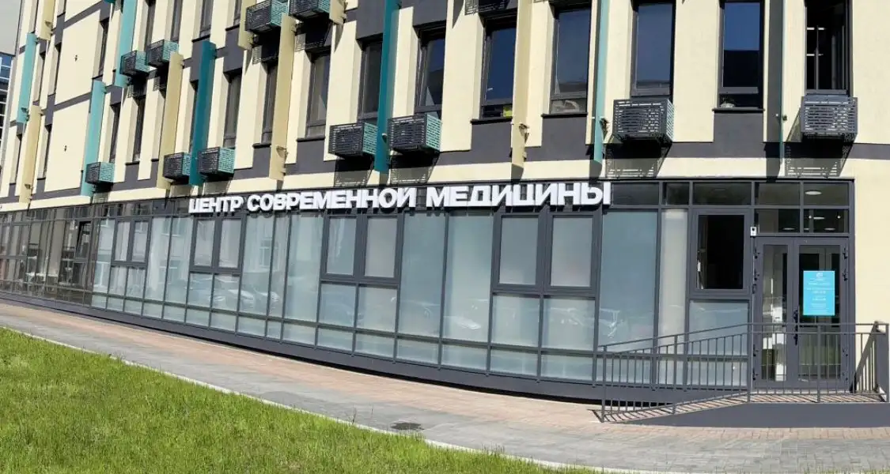

Ждём вас в центре города
Центр современной медицины находится в центре Красноярска, на улице Карла Маркса, 75А. Звоните, пишите или оставьте заявку — администратор подберёт удобное время приёма.
ул. Карла Маркса, 75А660049, зд. 75А, пом. 2, офис 1-01, 1-02

Маршрут до центра
Мы находимся в центре Красноярска по адресу: ул. Карла Маркса, зд. 75А, пом. 2, офис 1-01, 1-02.
Построить маршрут на автомобиле, общественном транспорте или пешком удобнее всего в Яндекс Картах — там же актуальные остановки и парковки рядом.
Если не получается найти вход, позвоните по номеру +7 (913) 558-87-11 — администратор подскажет.
Как записаться на приём
Срок ожидания приёма врача — до 3 рабочих дней. Выберите удобный способ.
По телефону
Позвоните по номеру +7 (913) 558-87-11 в часы работы центра: Пн–Пт 8:00–20:00, Сб 9:00–16:00.
Через форму
Оставьте имя и телефон в форме ниже — администратор перезвонит и подберёт время.
Юридическая информация
- Полное наименование
- ООО «Центр Современной Медицины»
- ИНН / КПП
- 2466301286 / 246601001
- ОГРН
- 1242400028793
- Юридический адрес
- 660049, Красноярский край, г. Красноярск, ул. Карла Маркса, зд. 75А, пом. 2, офис 1-01, 1-02
- Лицензия
- № Л041-01019-24/02281812 от 07.05.2025, Министерство здравоохранения Красноярского края
Вопросы, предложения и жалобы
Письменные обращения принимаем по почте и у администратора. Мы рассмотрим каждое и ответим.
Оставьте заявку
Администратор свяжется с вами в рабочее время, подберёт врача и удобное время приёма, ответит на вопросы о подготовке и стоимости.
Перед визитом
Подробные правила — в разделе «Пациентам».
Можно ли прийти без записи?
Приём ведётся по предварительной записи — так мы бережём ваше время и не создаём очередей. Позвоните перед визитом: если у врача есть свободное время, администратор запишет вас на ближайшее.
Работаете ли вы в выходные?
В субботу центр открыт с 9:00 до 16:00, воскресенье — выходной. График отдельных врачей — на странице «Врачи».
Что взять с собой на приём?
Паспорт, результаты предыдущих анализов и исследований, выписки и список принимаемых препаратов. Для оформления договора нужны паспортные данные.
Как отменить или перенести запись?
Позвоните по номеру +7 (913) 558-87-11 или напишите в MAX или Telegram — администратор предложит другое время.